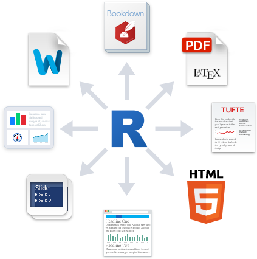

ggplot(data = gapminder,
aes(x = gdpPercap,
y = lifeExp,
color = continent))+
geom_point(alpha=0.3)+
geom_smooth(method = "lm")+
scale_x_log10(breaks=c(1000,10000, 100000),
label=scales::dollar)+
labs(x = "GDP/Capita",
y = "Life Expectancy (Years)")+
facet_wrap(~continent)+
guides(color = F)+
theme_light()Applied Economics with R

Zahid Asghar, School of Economics, QAU
Organized by: Pakistan Institute of Development Economics
Overview and objectives
This is a comprehensive training with a focus on doing empirical economics with R. It will aim at teaching R for doing economics instead of learning R. Moreover, objective will be to enable research students to do analysis having speed, efficiency and reproducibility so one focus on research question in hand rather spending most of one’s time on editing, formating and other trivial things.This is designed to introduce students to focus on research design, thinking clearly with data and learn by practice. Doing Economics by CORE exercises in R (pdf/html document generated in R) will be the requirement for research students to get a pass in the course. Emphasis during the eight weeks comprehensive workshop will be
Data wrangling, data visualization and data tables
Econometric tools with nice printable format
Learning Quarto Markdown Language (R/Python/Julia) for producing beuatiful document with files speaking to files without copy and paste
Producing macroeconomics graphs like NYT/Economist/WSJ… with effective storytelling
Reproducing results Impact Evaluation in Practice
Resources
- Doing Economics by CORE
- R4D
- Telling Stories with Data
- Applied Economics with R I will be providing students with several sets of practice questions during the course besides some of the resources mentioned above. ## Course contents
| Week | Title | Topics covered | Essential reading |
|---|---|---|---|
| 1 | Software | Introduction to R, RStudio, POSIT Cloud , gituhub | RStudio cloud github Quarto |
| 2 | Data Vocabulary, taxonomy, wrangling | ||
| Reading STATA/SPSS/csv/xlsx webAPI data in R | In class-labs | continued | |
| 3 | Data visualization | grammar of graphics ggplot2 | graphics for categorical and continuous data using R, |
| 3 | Lab on having data visualization | In-class lab | Applications |
| 4 | Data Tables | Learning Data Tables with R as published in world leading outlets | Tables from various PIDE resources and reproducing tables like 538, NYT, WSJ, FT… |
| 4 | Lab | In class lab | |
| 5 | Exploratory Data Analysis in R in minutes | Data Exploration not in months/weeks but in minutes | dataxray in R |
| 5 | Exploratory Data Analysis in R | Lab | |
| 6 | Econometric Model Results | How to have results of various models like those of leading journals | |
| 6 | Lab | MLR models | |
| 7 | Using Quarto for beautiful reports/presentation/books/thesis | Learning Quarto for enhancing productivity | Lab |
| 8 | Submitting a comprehensive document in html/pdf generated using Quarto Markdown in R like AER | Demonstration of doing all tasks from day1 to final project with only R including presentation | |
| 8 | continued | continued |
Data Science
You don’t “learn R”, you learn how to do things in R
The next 8 weeks are all about giving you the tools you need
- Admittedly, a bit before you know what you need them for
We will extend them as we learn specific models
R
Free and open source
A very large community
Can handle virtually any data format
Makes replication easy
Can integrate into documents (with
Quarto markdown)R is a language so it can do everything
- A good stepping stone to learning other languages like Python

Excel (or Stata) Can’t Do This
Warning: The `<scale>` argument of `guides()` cannot be `FALSE`. Use "none" instead as
of ggplot2 3.3.4.`geom_smooth()` using formula = 'y ~ x'
Or This
The average GDP per capita is ` r dollar(mean(gapminder$gdpPercap)) ` with a standard deviation of ` r dollar(sd(gapminder$gdpPercap)) `.
The average GDP per capita is $7,215.33 with a standard deviation of $9,857.45.
Or This
library(leaflet)
leaflet() %>%
addTiles() %>%
addMarkers(lng = 73.1387, lat =33.7492 ,
popup = "Pakistan Institute of Development Economics, Islamabad")